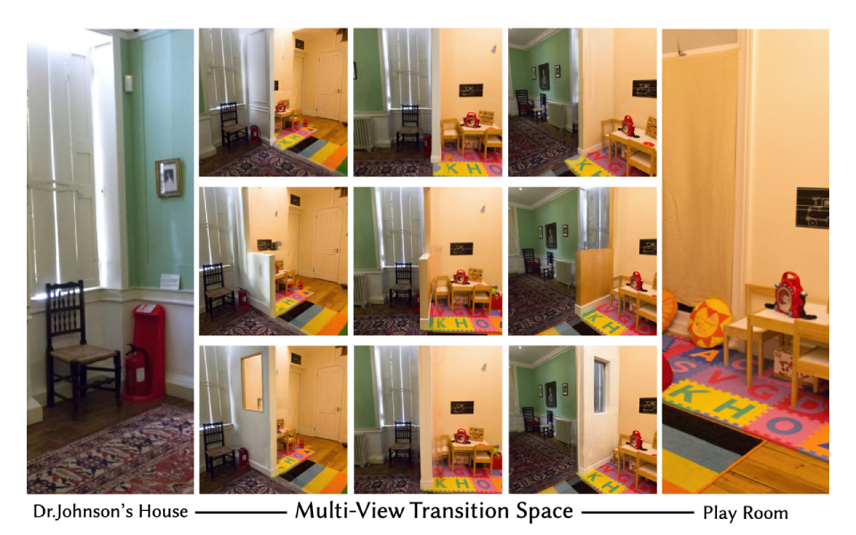
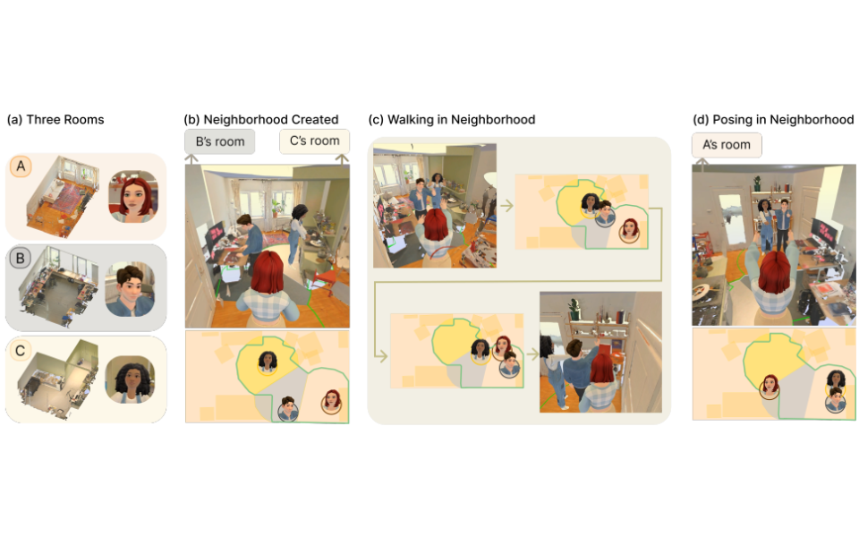
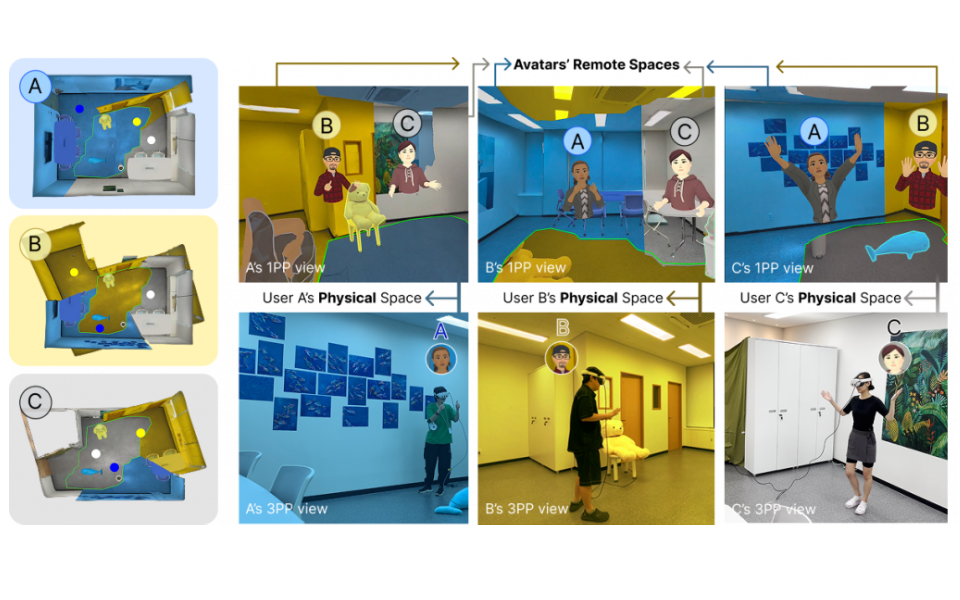
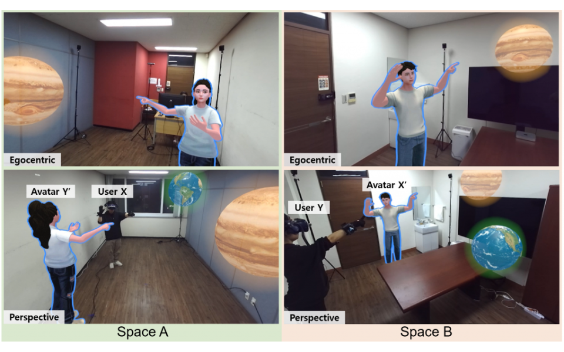
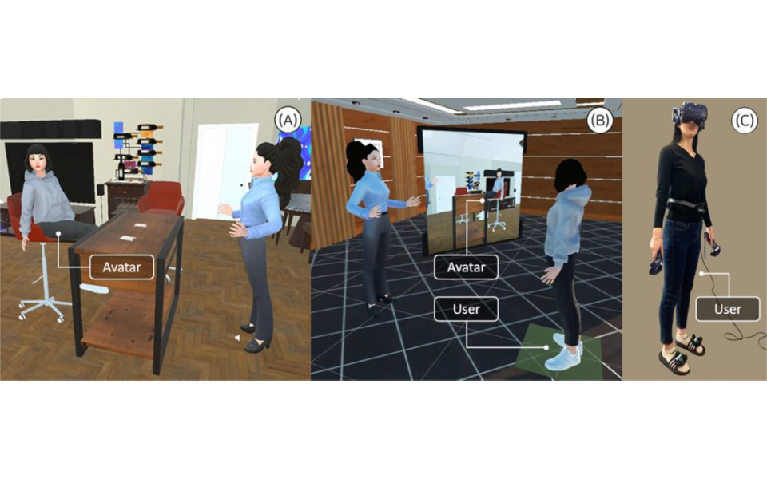
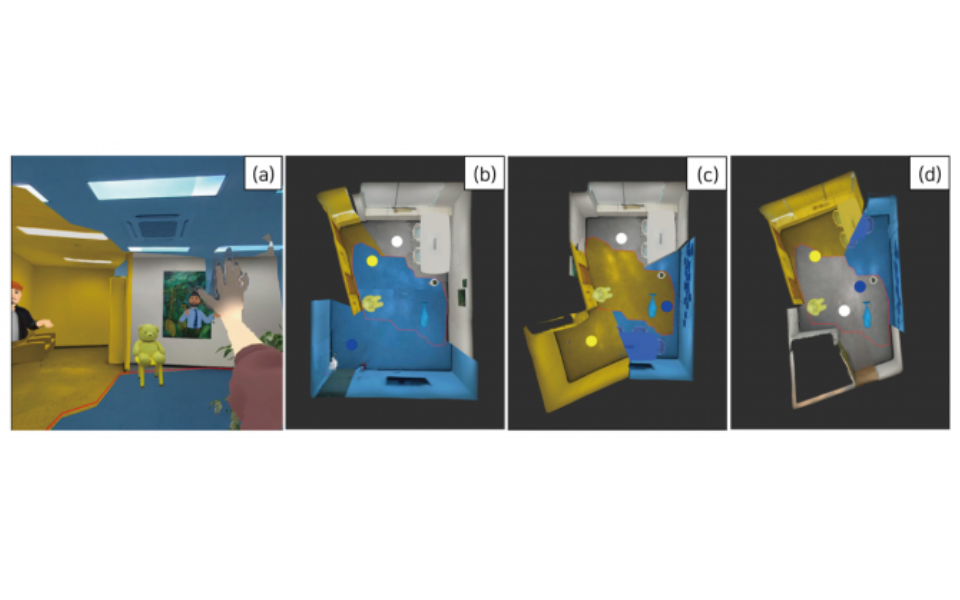

TranSpace: Progressive Anchoring for Metric-Consistent Scene Synthesis
Synthesizes transition spaces between overlapping rooms while progressively anchoring generated geometry to preserve metric consistency.

I am a Ph.D. candidate in the Lifelike Avatar & Agent Laboratory at KAIST, advised by Prof. Sung-Hee Lee. My research focuses on how artistic principles and experiences can be generalized into computational methods and systems. I am currently working on generative 3D scene synthesis, 3D reconstruction, and telepresence.
If you are interested in discussing research or exploring a collaboration, feel free to reach out at hyedeep(at)kaist.ac.kr.

Synthesizes transition spaces between overlapping rooms while progressively anchoring generated geometry to preserve metric consistency.

Aligns multiple remote spaces to create a traversable neighborhood, allowing users to walk into each other's spaces.

Dynamically modulates visibility of overlapping remote spaces based on user locations using Voronoi regions.

Translates upper-body gestures in real time so avatars convey users' intended movements across dissimilar remote spaces.

Studies how users perceive and prefer physics-adapted avatars when remote spaces do not match.

Demonstrates dynamic visibility modulation of aligned spaces for multi-user MR telepresence.
Last updated August 2026